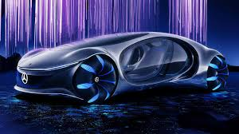
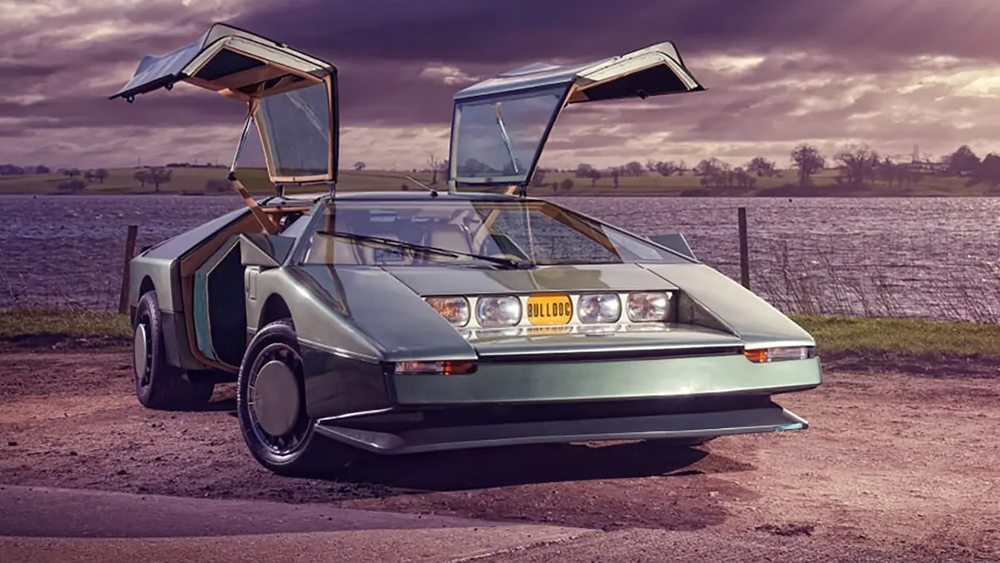
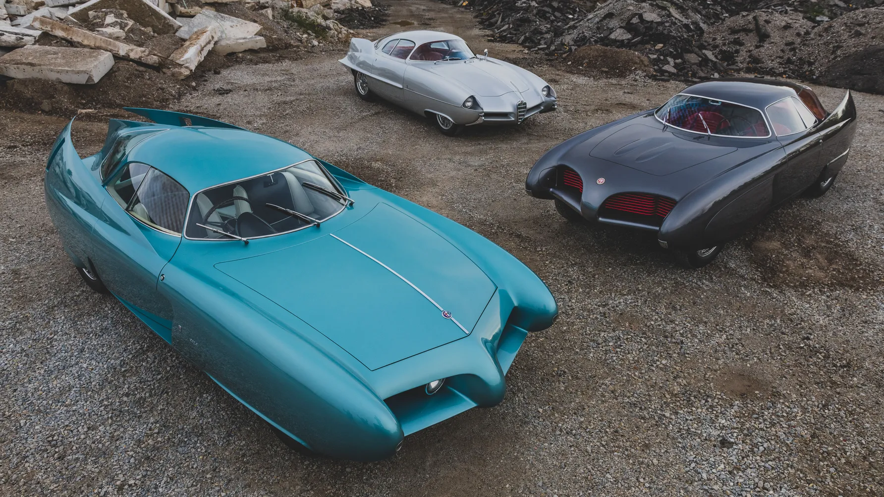
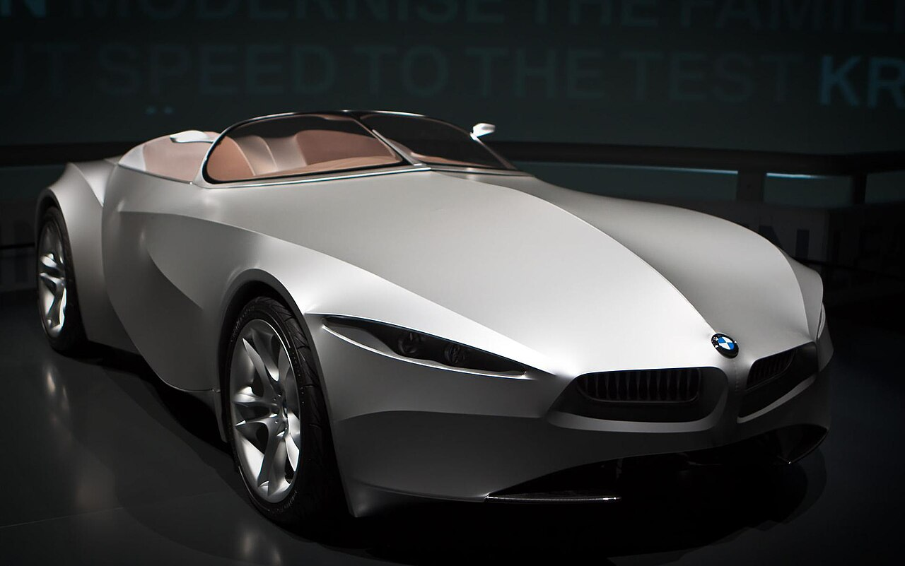
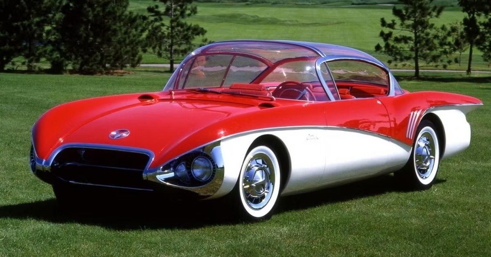

1. Mercedes-Benz Vision AVTR

The Mercedes-Benz Vision AVTR is a drivable, sustainable concept car inspired by the movie Avatar, featuring a 110 kWh graphene-based organic battery and a whopping 700 km range. The car has no traditional steering wheel — instead, the driver places their hand on a central console that reads their heartbeat and merges with the vehicle through a brain-computer interface. 26 flap-like scales on the rear of the car move independently like the scales of a living creature, giving it an almost biological feel. The interior is made entirely from sustainable and vegan materials, with no leather or plastics in sight. Four individual electric motors power each wheel separately, producing a combined 350 kW — roughly 469 horsepower — allowing all four wheels to turn 30 degrees sideways, letting the car move crab-style. Unveiled at CES 2020 in Las Vegas, the Vision AVTR was designed in collaboration with the creators of the Avatar film franchise, making it one of the most unique crossovers between Hollywood and the automotive world ever seen.
2. Aston Martin Bulldog

The Aston Martin Bulldog was a radical departure from everything Aston Martin had ever made. This brash wedge-shaped supercar featured gullwing doors, squared-off ends, and recessed headlights hidden beneath a folding panel. Under the hood sat a twin-turbo 5.3-litre V8 producing 650 horsepower, with a claimed top speed of 200 mph — making it one of the most ambitious British supercars ever conceived. Only one was ever built, making it one of the rarest concept cars in existence.
3. Alfa Romeo BAT Cars

The Alfa Romeo BAT Cars — standing for Berlina Aerodinamica Tecnica — were a series of three stunning concept cars built between 1953 and 1955 in collaboration with Bertone. Each one pushed the boundaries of aerodynamic design further than the last. The 1954 BAT 7 achieved a drag coefficient of just 0.19 — a number that rivals modern hypercars. Their dramatically curved tail fins, sweeping rooflines, and sculpted bodywork made them look like they had flown in from another era entirely.
4. BMW GINA Light Visionary Model

The BMW GINA — standing for Geometry and Functions In 'N' Adaptions — is one of the most extraordinary concept cars ever built. Unveiled in 2008 after seven years of development, its entire body is covered in a polyurethane-coated Spandex fabric stretched over a moveable aluminium wire frame. The car can literally change its shape — headlights open like eyelids, the hood splits down the middle, and the rear spoiler rises out of the fabric at high speed. There are only four panels on the entire car, yet the surface appears completely seamless. It is fully drivable and currently lives in the BMW Museum in Munich.
5. Buick Centurion

The Buick Centurion of 1956 looked like it had been ripped straight off a jet fighter. Its massive all-glass bubble canopy, cone-shaped rear taillight mimicking a jet turbine, and U-shaped front end made it unlike anything on American roads. But the Centurion wasn't just a pretty shell — it came loaded with technology decades ahead of its time, including a dial-operated transmission, automatic adjusting seats, and most remarkably, a rear-mounted camera feeding a screen on the dashboard — the first ever rearview camera on a car, nearly 60 years before it became standard.